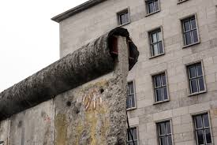

Berliner Mauer
Wie kam es zur Berliner Mauer - Planet Wissen
Walter Ulbrich lies die Mauer in der Nacht
vom 12. afu den 13. August 191 von der Vorstellung
zur Umsetzung werden. ER wollte damit den Flüchtlings-
strom eindämmern und seine Macht festigen. Er drängte
die Sowjetunuion zur Zustimmung der Grenzschliessung
in Berlin. Im November 1958 stimmte er zum nie gewollten
Berliner-Ultimatum zu. Damit began die längste Krise im
kalten Krieg.
Reaktion des Volks auf den Mauerbau - DW Deutschland
Das Volk probierte sich mit Hilfe von Protesten und
Demonstrationen gegen die Errichtung der Berliner Mauer,
wurden die Arbeiter und Soldaten nicht freundlich behandelt.
Man beschimpfte sie, versammelte sich, konnte jedoch nicht
gegen die bewaffneten Soldaten tun. Am Vor-/Nachmittag fanden
unzählige Proteste statt. Man musste den Soldaten noch
Polizeiunterstütztung zukommen lassen.
Der Mauerfall - politische Bildung
Am 9. November spielte das Reisegesetz eine entscheidende Rolle im Kontext der politischen Veränderungen in der DDR. Hier ist eine Zusammenfassung der Ereignisse dieses Tages:
8. November: Das SED-Zentralkomitee (ZK) begann eine dreitägige Sitzung, bei der das Politbüro zu Beginn geschlossen zurücktrat.
Hoffnung auf Stabilisierung: Die neue SED-Führung unter Egon Krenz und Hans Modrow hoffte, die Situation in der DDR zu stabilisieren. Ein Teil ihres Plans war ein neues Reisegesetz.
Öffentlicher Entwurf des Reisegesetzes: Am 6. November war ein Entwurf des neuen Reisegesetzes öffentlich geworden und hatte heftige Proteste ausgelöst, da er nur eine eingeschränkte Reisefreiheit für Bürgerinnen und Bürger versprach.
Krenz informiert das ZK: Am Nachmittag des 9. November erklärte SED-Generalsekretär Krenz dem ZK die vorgesehenen Änderungen am Reisegesetz.
Schabowski informiert die Medien: Günter Schabowski, der Sekretär für Information, sollte die internationalen Medien über den Verlauf des Sitzungstags informieren.
Die Pressekonferenz: Kurz vor einer Pressekonferenz um 18 Uhr erhielt Schabowski von Krenz die Beschlussvorlage, die die neuen Regelungen zum Reisegesetz enthielt.
Überraschende Ankündigung: In der Pressekonferenz wurde zunächst nicht viel über das Reisegesetz gesprochen. Doch auf Nachfrage eines Journalisten führte Schabowski die Reiseregelungen näher aus.
Die entscheidende Ankündigung: Schabowski verkündete, dass DDR-Bürgerinnen und -Bürger ab sofort über alle Grenzübergänge in die BRD und West-Berlin ausreisen dürfen, ohne Vorliegen von Voraussetzungen oder Verwandtschaftsverhältnissen. Die Behörden wurden angewiesen, Pässe und Visa unverzüglich zu erteilen.
Massenandrang an den Grenzen: Die Nachricht von der sofortigen Öffnung der Grenzen verbreitete sich rasch. Tausende Ostberlinerinnen und -Berliner strömten zu den Grenzübergängen.
Die Grenzen öffnen sich: Die Diensthabenden an den Grenzübergängen konnten dem Massenandrang nicht standhalten. Gegen 23.30 Uhr öffneten sie die Grenzen, und die Menschen strömten in die BRD und West-Berlin.
Diese überraschende Ankündigung von Schabowski führte dazu, dass die DDR-Grenzen sich öffneten und war ein entscheidender Moment in der deutschen Geschichte, der letztendlich zur Wiedervereinigung Deutschlands beitrug.
